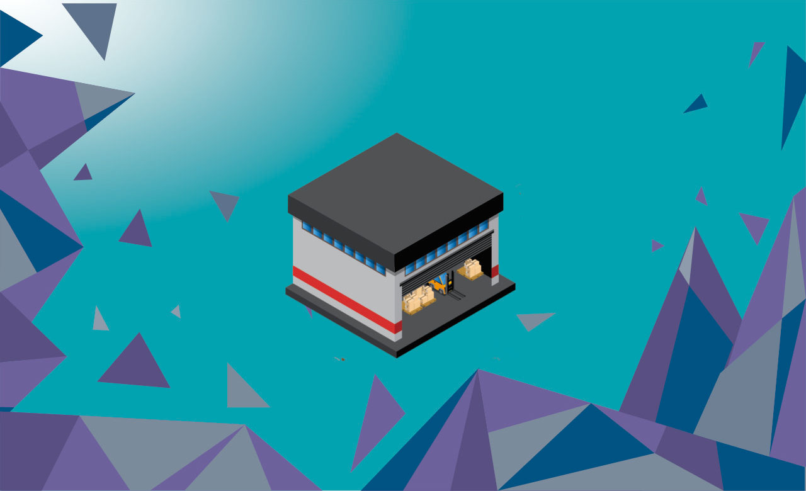
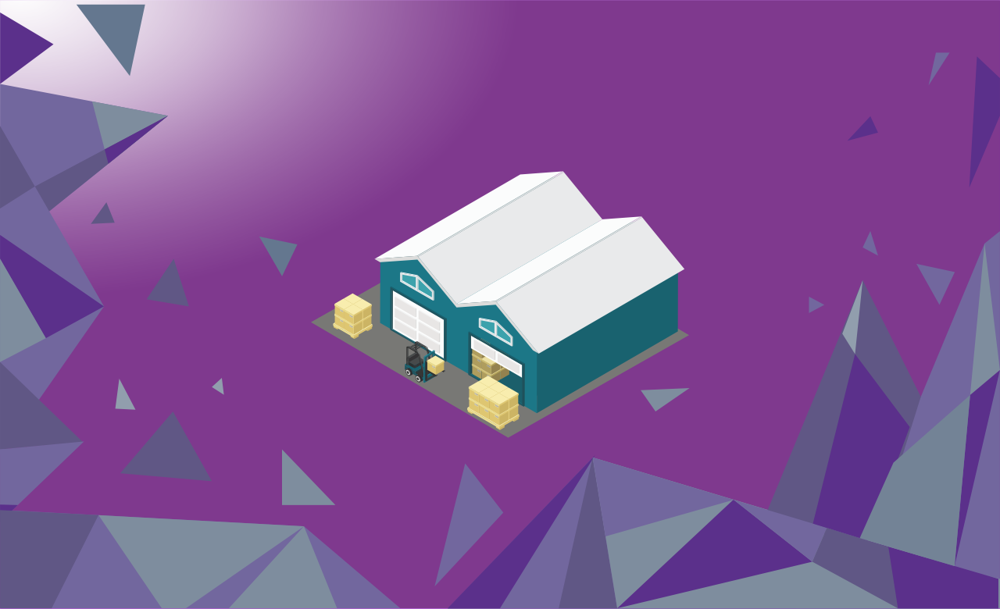
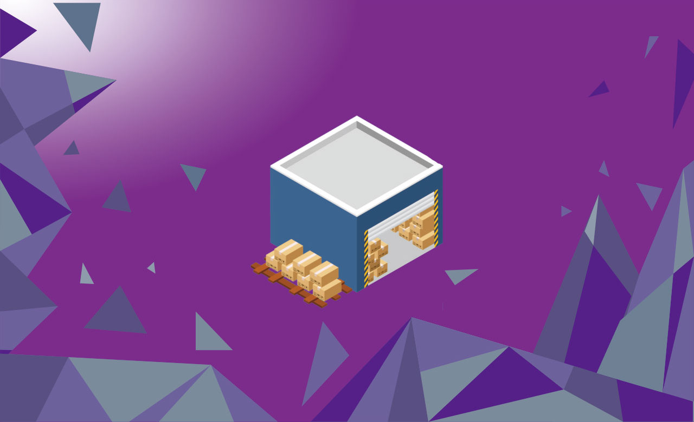

RZF Minimarket

Aplikasi Minimarket ini, dibuat untuk jenis usaha yang saat ini memiliki potensi besar sampai masa depan pilihan yang tepat untuk Anda yang sedang menjalankan atau merintis bisnis minimarket. Pada umumnya software ini dirancang untuk mempermudah proses penjualan dan pembelian barang, sehingga setiap transaksi jual beli dapat terlaksana lebih cepat dan efisien. Aplikasi minimarket yang terintegrasi akan mengelola inventaris Anda, mengelola manajemen promosi hingga memudahkan stok barang, juga dapat mempermudah dalam memonitoring kehadiran pegawai.
RZF Toko Retail
RZF Toko Retail ini, dibuat untuk aplikasi pertokoan retail seperti toko sembako, kelontongan, meubel, komputer, elektronik, minimarket, dan toko lainnya yang dilengkapi dengan laporan keuangan beserta dengan grafik. Hasil karya ini sudah melewati beberapa riset dan pengujian agar bisa digunakan semudah mungkin, disesuaikan dengan kebutuhan pengguna di lapangan agar dapat bermanfaat sebaik-baiknya.
RZF Toko Grosir
RZF Toko Grosir ini, dibuat untuk aplikasi pertokoan grosir seperti toko sembako, kelontongan, meubel, komputer, elektronik, minimarket, dan toko grosir lainnya yang dilengkapi dengan laporan keuangan beserta dengan grafik. Aplikasi ini tidak hanya multi harga, namun juga multi satuan, atau istilahnya harga dan satuan bertingkat. Seperti contoh pembelian suatu produk dengan satuan dus yang di dalamnya terdapat botolan, maka aplikasi mampu menjual baik dengan dus maupun botol. Hebatnya sistem akan menghitung secara otomatis dengan cepat dan tepat. Program aplikasi ini biasanya banyak digunakan oleh para agen atau distributor.
RZF Bangunan Retail
RZF Bangunan Retail ini, dibuat untuk aplikasi toko bangunan yang dilengkapi dengan laporan keuangan, surat jalan beserta dengan grafik. Insya Allah hasil karya ini sudah melewati beberapa riset dan pengujian agar bisa digunakan semudah mungkin, disesuaikan dengan kebutuhan pengguna di lapangan agar dapat bermanfaat sebaik-baiknya.
RZF Bangunan Grosir
RZF Bangunan Grosir ini, adalah sebuah aplikasi yang dirancang khusus untuk aplikasi pengelolaan toko grosir bangunan, dilengkapi dengan laporan keuangan beserta dengan grafik. Aplikasi ini tidak hanya multi harga, namun juga multi satuan, atau istilahnya harga dan satuan bertingkat. Seperti contoh pembelian suatu produk dengan satuan dus yang didalamnya terdapat kalengan, maka aplikasi mampu menjual baik dengan dus maupun kaleng. Hebatnya sistem akan menghitung secara otomatis dengan cepat dan tepat. Program aplikasi ini biasanya banyak digunakan oleh para agen atau distributor toko bangunan.
RZF Apotek Retail
RZF Apotek Retail ini, dibuat untuk aplikasi apotek retail seperti apotek, toko obat, toko alat kesehatan, dan usaha sejenis lainnya yang dilengkapi dengan laporan keuangan beserta dengan grafik. Hasil karya ini sudah melewati beberapa riset dan pengujian agar bisa digunakan semudah mungkin, disesuaikan dengan kebutuhan pengguna di lapangan agar dapat bermanfaat sebaik-baiknya.